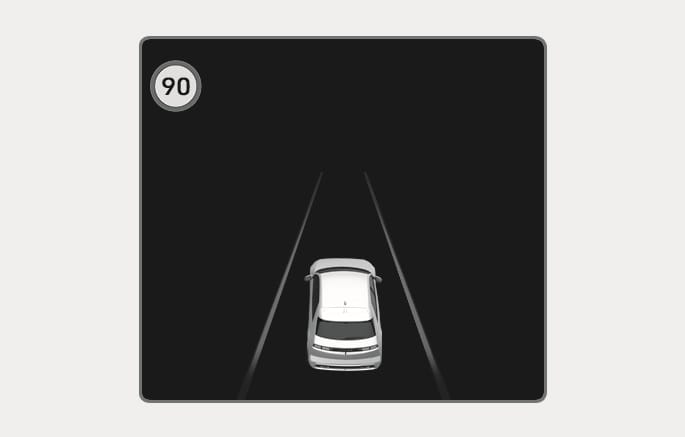
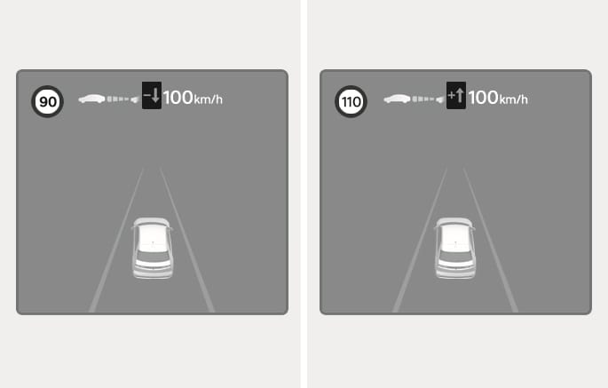
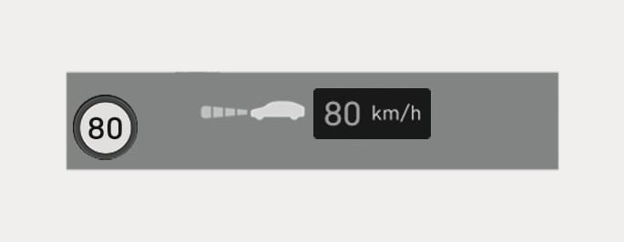

지능형 속도 제한 보조 작동

2C_ISLASpeedLimitInfo
클러스터에 제한속도 정보가 표시됩니다.
-
도로의 제한속도 정보를 알 수 없는 경우에는 클러스터에 '- - -'로 표시됩니다. 표지판 인식이 어려운 조건은 '제한 사항'을 참고하십시오.
-
지능형 속도 제한 보조는 제한속도 정보 외에 부가 표지판 정보를 제공합니다. 단, 부가 표지판 종류는 국가별로 다를 수 있습니다.
-
클러스터 사양 또는 테마에 따라 클러스터에 표시되는 이미지나 색상이 다를 수 있습니다.
과속 경고
표시된 제한속도보다 높은 속도로 주행할 경우 제한속도가 빨간색으로 표시됩니다.

2C_ISLAChangeSetSpeedInfo
수동 속도 제한 보조 또는 스마트 크루즈 컨트롤이 작동하는 중에 도로의 제한속도가 변경되면 위 또는 아래 방향의 화살표를 통해 설정속도 변경이 필요함을 알립니다.

2C_ISLASetSpeedAutoChangeInfo
수동 속도 제한 보조 또는 스마트 크루즈 컨트롤 작동 시, 운전자가 설정한 속도가 도로의 제한속도와 같다면, 이후 제한속도가 바뀌면 이에 맞추어 자동으로 설정속도를 조절합니다. 제한속도가 70 km/h 이상인 도로에서 작동하며 기능이 활성화 될 경우 클러스터의 설정속도는 초록색으로 표시됩니다.
-
제한속도 이하로 주행하려면 오프셋 값을 '0'보다 낮은 값으로 설정하거나
ï 스위치를 눌러 설정속도를 낮추십시오. -
도로의 제한속도에 맞춰 설정속도를 변경한 이후에도 제한속도를 초과한 상태로 주행할 수 있습니다. 항상 교통 상황을 확인하고 필요한 경우 운전자가 직접 감속하여 주행하십시오.
-
도로의 제한속도가 30 km/h 미만일 경우에는 설정속도 변경 기능은 작동하지 않습니다.
-
수동 속도 제한 보조 작동 방법에 대한 자세한 내용은 '수동 속도 제한 보조 (MSLA)'를 참고하십시오.
-
스마트 크루즈 컨트롤 작동 방법에 대한 자세한 내용은 '스마트 크루즈 컨트롤 (SCC)'를 참고하십시오.